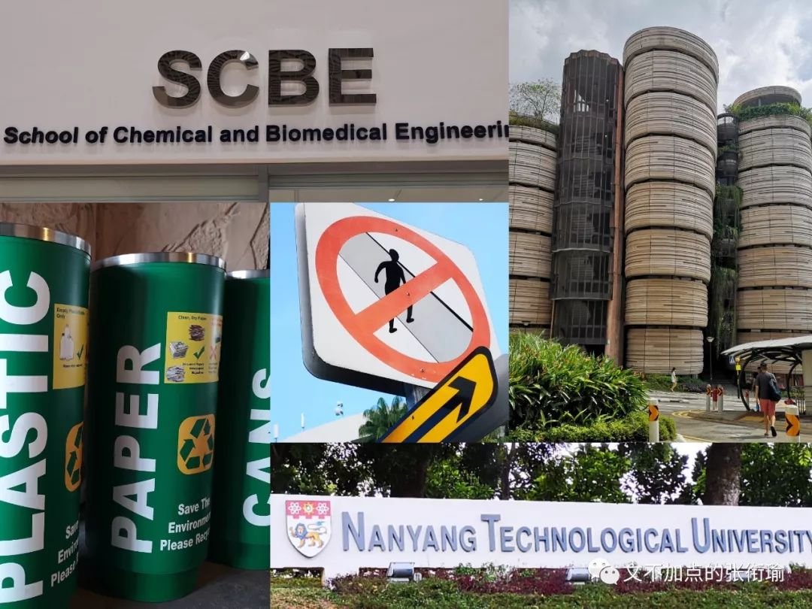
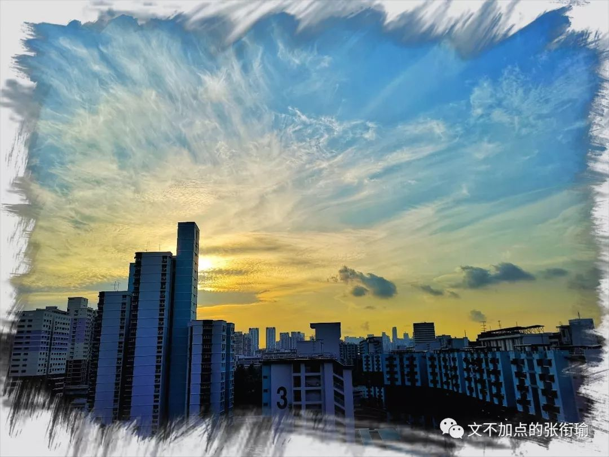
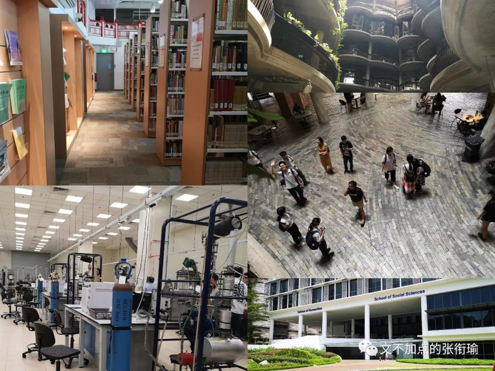

本文共计2951个字
是很久没有动笔的游记了呢

其实也没有多断断续续 是我一直没有开始写这一篇和这个地方 借口没有时间的时候 有那么几天是真的没有时间 早已有要写下这篇的必要了 毕竟游记 已经是为数不多的能催促我去写点什么的题材了
狮城是一个很熟悉的地方 许久以前曾经因为有要去读书的可能 所以对当地有一些的了解 不过主要是为了在面试的时候对付一群面试我的老师们 仅此而已
从武汉天河国际机场到新加坡樟宜国际机场 我偶尔也在计算MI985次航班 在这个时间点的时候有可能会在地图上哪个地方 湖北 湖南 两广 香港 南海 印尼 还是哪个国家地区 初中地理留给我对于马六甲海峡的记忆 以及高中时那些没有弄明白的静止锋和纯靠记背的洋流 这时想回忆起来 也实在是有些困难
好在三千多米的平流层高空 地面上所谓的天气影响已经没有多少 远处 殷殷残红的夕阳浸染着雕饰着流云的轮廓和如棉的内里 就好像是小孩子吃的白色棉花糖上 抹了一层能闻到些许焦糖气味的蘸料 只是在夕阳最盛的时候 眼睛不大能直视 而等到渐渐落下天际线的时候 又没了多少景致 黄昏 是我一天中视力最差的时候 相机也相助不得
出了机场 take public transportation 拖着行李箱走在路上 此处须得先给几张图

我原以为 长沙的司机在开车时骂骂咧咧的已经够凶了 街道倒设计得差强人意 后来高中毕业后去成都 觉得天府之国的街道确实有在为行人考虑 然后到了武汉 在光谷的行走体验和搭车体验几乎没有什么好的
新加坡的司机却完全不会这样 我自是和在国内一般 路口附近眺望一番 司机远远地看到了我们一行人要通过 早早地便减速了下来 按照国内 行人为了确保安全停下来等等车的习惯 而对方却只是停下来等我们过去 并不会有其他超越的试图 遇到这样的事情 其实是很常见的 我偶尔会是司乘出自怎样的心态才导引到的这般路面秩序 但没有结果
说来街道设计也应当有一定的关联 开车的人可以不用太费力地就看到远处的行人 而我自己考了驾照后 在路上开车 很多次地会因为施工路障或者说是老城道路附近而减速避让 这时总会有同车人开始催促我快走快行 习惯与氛围 并不是可以割裂开来的 有时候 我自己在国内也不会那么认真严格地遵守交通规则 不管是不小心还是因为路面设计二不得不这么做 总归 能让人很自觉地遵守起交通的规则 并且互相礼让 这是城市文明很成功的一块了
前几天看到说北京市采用华为云的人工智能技术 充分进行车流量与人流量的数据挖掘（当然 这和我现在做的方向有不小的关联度） 以此来智能选择每个时间的北京市交通信号灯放行和限行的时间长短 我觉得是一个很棒的设计
新加坡没有这样 新加坡的设计是在每个路口的人行道附近都设计了按键 当有人要通过路口的时候 就按下这个按键 然后控制系统在过了一小段时间后变灯 给出人能够走过的时间 在没有人要通过路口的时候 信号灯则一直放行机动车
新加坡的公交也很有意思 几条地铁线像骨架一样架好了城市 公交车的线路则是大多以地铁站为中心的建设取向 比如从地铁站直接接驳乘客到住的小区里边去 算是这样子把公交出行的几个选择衔接好了
两个神奇的是 公交地铁之间互换的时候 比如刚刚下了地铁要去搭公交 半个小时内上公交的话是不收费的 公交转地铁亦然 中间扣费会自动减除一部分 也算是一类倡导吧
另外一个神奇的是新加坡的地铁站几乎没有安检 甚至连象征性地给你意思一下要金属探测的都没有 我们一个团队拖着箱子 背着包来来去去几天 中间仅仅有一个人被随机开箱抽查过一次而已
我问在新加坡读书很久现在回国任教的老师这是怎么回事 老师说是因为当地的犯罪率极低极低 我问出租车司机新加坡路上哪些车是警车 司机带着我们从Alexandra Road开到Bayfront一路上都只看到了一辆 司机说会被抓起来的罪犯 最多的是惯犯和找不到工作的人 惯犯就像是多次盗窃的小偷 找不到工作的则是去看守的地方死皮赖脸国家养自己

描述一座城市一群人 要么就很客观理性地描述其设计导向的实际践行情况 要么就很主观情感地说这个城市带给自己的感觉 做旅游攻略的时候总看到什么风光秀丽宾至如归之类味同嚼蜡的话 可以说给不了我任何有用的信息点 （小小的腹诽罢辽
顺便给两个快拍 一个是在新加坡国立里边 校车车头的快拍 一个是在地铁绿线上大概是bonna vista附近的快拍 不是很长 也没有配音了就

张衔瑜在每个城市必定要提到的当然是当地的吃吃喝喝吧 新加坡的饮食倒是很清奇 往往说在那个地方可以吃到各地美食的时候 往往都没有能太惊艳到路人的食品 不知道是不是一个地方的特色并不能和外来的特色好好和平共处 抑或是和平共处很多特色意味着没有特点 搞不太懂
这一碗是在住的旁边 招牌上写得很厉害的一个新加坡本地有名的莲记肉脞面 一大早过去排队 还需得等上一会儿 老板说着带有粤语尾音的普通话 烫过碗后 下了面 浇上汤 盖了鱼蛋 我仍是按长沙人习惯地点了醋加上辣椒 却不想辣椒能被我一个湖南人夸着有劲
旁边是家做甘蔗汁的 老板拿着大概是直接从印尼那边进过来的甘蔗放进机器 当着把甘蔗压得只剩纤维组织 放了大半杯冰块地插上吸管给我
一个叫我有点点受不了的是新加坡对待鸡蛋的方式 第一次吃的时候以为是店家对我有意见做了这样的食物给我 后来同学说 新加坡的鸡蛋很多就只是把外壳清洗干净之后 放到滚烫的水里边涝一道就放上了餐桌 比较理想的是蛋壳里边那一层膜将落未落 蛋清蛋黄还是流体可以流动 这时候一吸就可以嗦掉一整个鸡蛋 起初他们也不习惯这种吃饭 不过后来慢慢地觉得这么吃也不错 我试过两次 一次在上图这个南洋理工著名建筑the Hive小笼包旁边的那个食堂里 还有一次是在酒店旁边的早餐店里 图是配餐了带着美式咖啡泡的早餐 挺元气的说
倒是说新加坡在外边人听说过的最棒的 大概是肉骨茶了吧 but不知道是不是打开方式不太对 或者我的味觉不足以在肉汤里分辨出茶味 Marina Bay的这一碗肉骨茶 （吃/喝）起来大概也会被我归到筒子骨汤或者一般般的排骨汤里边去 并没有被感动到的那种程度

在南洋理工的School of Social Science碰巧遇到了当时在开的一个讲座 叫文化遗产与教育体制——东南亚华校国际学术论坛
一些同学在华裔馆游荡 我出了王庚武图书馆后 就和学长到了讲座那边 打了一些Ummmmm我也说不太清这些到底叫什么的吃的 大概有粉丝 鲜饺 某种类似于鳗鱼但不是鳗鱼的海产酱汁鱼肉 以前在娘惹裙厨也吃到过的像菠萝一样但不是菠萝的甜甜的奇怪东西？？？ 唯一能叫出名字的大概就只是金桔柠檬了吧 我并没有去听讲座 但是在讲座外边就直接是对校内所有人开放的 校园又是对所有公民开放的
我有点点惊奇于这边讲座的设计 在学长看来有这样的讲座去蹭吃蹭喝偶尔听听还挺不错 但从组织者的角度看来 能设计这样的活动 我自问自己看过走过那么多的排面场次 这样的非公益非斋饭类型的 这是第一次见到
Avocado Milkshake是在新加坡国立 朱朱推荐的一个神奇的饮料 中文翻译好像是叫鳄梨奶昔 喝起来有点点游走在奶味和牛油果味道的边缘？？ 东南亚总是有很多神奇的配食
要说其实这次也在NTU & NUS的化学系访学了不少 但也许是我从中科院回来之后 对仪器和科研环境的眼界相较去年同期去香港的时候高出了不少 所以就不特别的提了出来 好吃的也还有不少 比如一个叫海南鸡饭的2333 有点可惜的是这次没有去食蟹 自然也就没有存图了
这次尝试着就重点来写 一个是交通道路看到的城市设计 一个是传统的食物测评 新加坡看起来 其实是一个蛮宜居的地方 稍微提一点是在路上到处走听到的Singlish 给人有点点难受 可以用普通话的地方 比在香港要多 在香港觉得用英文比用普通话方便 大概是当地太多的说港普和港式粤语的人呢 新加坡倒是可以正常切换普通话和英文 只是听起来很奇怪
最后放很多张很多张在新加坡拍的道路或者别的什么地方的这种莫名其妙的信号牌标识 总感觉是个特别喜感的人在故意地把这些动作设计得很夸张很有造型 这个就只给图够了8

-END-
-留下尬走的足迹-
文不加点的张衔瑜


懒得打标点的张衔瑜在日常尬文 2333333